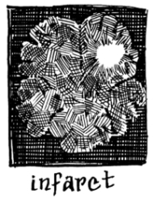

This page has usage examples for the following words:

a sign of aging 老化現象 ろうかげんしょう
arteriosclerosis 動脈硬化 どうみゃくこうか
blood flow 血行 けっこう
blood circulation 循環 じゅんかん
cardiac infarction, myocardial infarction
心筋梗塞 しんきんこうそく
cerebral infarction 脳梗塞 のうこうそく
stenosis 狭窄 きょうさく
tinnitus (ringing in the ears) 耳鳴り みみなり
I have suffered recently from ringing in my ears.
このところ耳鳴りに悩まされています。
このところ みみなりになやまされています。
The ringing in my ears gets worse and makes a "Zee" sound when I listen to running water. The ringing is synchronized to the sound of the water.
水道水の流れる音を聞くと耳鳴りがジィーとひどくなり、まるで共鳴しているようです。
すいどうすいのながれるおとをきくと みみなりがジィーとひどくなり、まるできょうめいしているようです。
Listening to loud noises all the time will cause tinnitus.
うるさい音を長時間聞くと、耳鳴りの原因になります。
うるさいおとを ちょうじかんきくと、みみなりのげんいんになります。
Is it a mild cerebral infarction?
軽い脳梗塞でしょうか。
かるいのうこうそくでしょうか。
Nicotine in tobacco causes arteries to constrict.
煙草に含まれるニコチンは、動脈の狭窄を起こします。
たばこにふくまれるニコチンは、どうみゃくのきょうさくをおこします。
A conversation between a patient and a doctor about a sign of aging
Patient:
Lately, I just don’t feel well, the neck and shoulder are stiff. The stiffness finally went away. Then, ringing in the ears has started. When I hear the tap water running, the ear starts ringing as if in resonance. Is it a sign of aging?
最近、何となく体調が悪く、肩懲りや首筋の懲りに悩まされました。ようやくそれは治ったのですが、今度は耳鳴りがするようになりました。殊に、水道水が流れる音などを聞くと、それに共鳴するようにジィーと耳鳴りがします。これは老化現象のあらわれでしょうか？
Doctor:
Tinnitus (ringing in the ears) occurs in young people as well. As a simple phenomenon, earwax or hair in the external ear canal makes dry noise every time you move your head. Do not try to remove objects in your ears. Instead, you should see an ear, nose and throat specialist. Listening to loud music on a stereo for long hours causes tinnitus. Obstruction of blood flow to the brain also causes tinnitus. When we get old, the wall of arteries hardens, the phenomenon is called arteriosclerosis, which leads to cerebral or cardiac infarction. The obstruction of blood flow can be prevented or reduced. Stop smoking is one type of prevention. Nicotine and other components in tobacco are known enemies of blood flow.
耳鳴りは若い方にも起こります。単純な現象としては、耳垢（Earwax）、あるいは、髪の毛が外耳道に存在して、頭を動かすたびにガサガサと音をたてることがあります。しかし、これも、耳鼻咽喉科（Ear-nose-and-throat specialist）で診てもらうことをおすすめします。ステレオをガンガン鳴らして長時間音楽を聴くことも、耳鳴りの原因になります。又、脳への血行が妨げられている場合にも起こります。我々、皆、歳をとると動脈壁が硬化し、血行が大なり小なり妨げられ、脳梗塞、心筋梗塞の原因となるわけですが、転ばぬ先の杖で、予防、あるいは軽くすることは出来ます。その一つが禁煙です。煙草のニコチンや他の成分は、血行にとって大敵であることがわかっています。
My two cents 一言おせっかい
You can keep your mind young by enjoying hobbies or having a friend with whom you can share a dream. It is also important to look yourself in a mirror to make sure that you are not slouching.
趣味や仕事に生き甲斐を持ち、夢を語れる友を持つと、いつまでも心は若く保てますね。
また、Stop slouching. 猫背にならないで、などと言われないように、 時々、鏡の前に立ってチェックすることも大切です。
[ro01]
| © 1995-2013 NACOS International Institute. All Rights Reserved. |